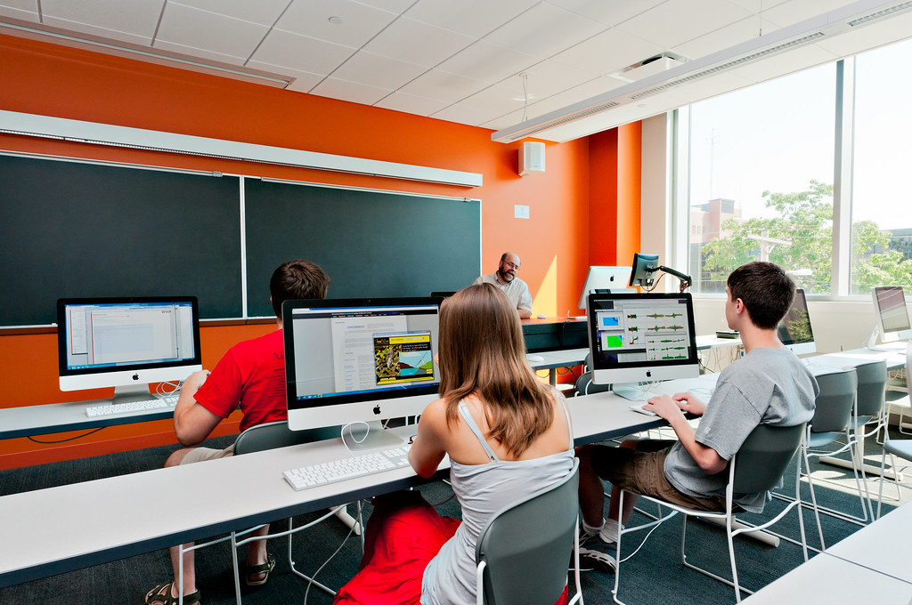

V šolah se uporabljajo različne vrste računalnikov, odvisno od potreb in proračuna šole. Nekatere pogoste vrste računalnikov, ki se pogosto uporabljajo v šolah, vključujejo:V šolah se uporabljajo različne vrste računalnikov, odvisno od potreb in proračuna šole. Nekatere pogoste vrste računalnikov, ki se pogosto uporabljajo v šolah, vključujejo:
- Osebni računalniki (PC): To so klasični namizni računalniki, ki so prisotni v računalniških učilnicah ali računalniških laboratorijih. Uporabljajo se za izvajanje učnih programov, pisanje esejev, dostop do spletnih virov in druge šolske dejavnosti.
- Prenosni računalniki: Prenosni računalniki so lahki, prenosni in jih učenci lahko uporabljajo kjerkoli v šoli ali doma. Uporabljajo se za dostop do informacij, pisanje nalog, ustvarjanje projektnih predstavitev in drugo delo na poti.
- Tablični računalniki: Tablice, kot so iPadi ali Android tablice, so priljubljene v šolskem okolju. Zaradi svoje enostavne uporabe in interaktivnih funkcij so lahko uporabne za poučevanje, učenje, ustvarjanje multimedijskih vsebin in sodelovalno delo.
- Interaktivne table: Interaktivne table so velike zaslone, ki se lahko dotikajo in so povezane s računalnikom. Uporabljajo se za prikazovanje učnih vsebin, interaktivne predstavitve, pisanje z roko ali s pisalom in sodelovalno delo med učitelji in učenci.

Poleg tega se lahko v šolah uporabljajo tudi druge vrste računalnikov, kot so strežniki za shranjevanje podatkov, računalniki za laboratorijske poskuse, prenosni računalniki za učitelje in še več. Izbor računalnikov je odvisen od potreb šole, proračuna, učnih ciljev in infrastrukture, ki je na voljo.